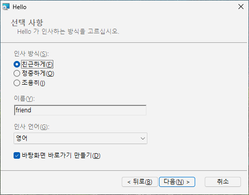

14 나만의 대화창 페이지
목표: 설치 폴더 페이지 뒤에 "선택 사항" 페이지를 더한다. 사용자는 거기서 인사 방식을 고르고, 이름을 입력하고, 목록에서 언어를 고르고, 바탕화면 바로가기를 만들지 정한다. 그리고 그 답을 레지스트리에 저장한다.
14.1 원본#
# tutorial 14: hello.toml
format = 1
[package]
name = "Hello"
manufacturer = "Example Software"
version = "$(VERSION)"
arch = "x64"
upgrade-code = "{3F2A6C1D-8B4E-4F7A-9C2D-5E6F7A8B9C0D}"
ui = "installdir"
[define]
VERSION = "1.12.0"
[ui]
languages = ["ko"]
[dialog.Options]
after = "RpInstallDirDlg"
title = "Options"
title-ko = "선택 사항"
description = "Choose how Hello greets you."
description-ko = "Hello 가 인사하는 방식을 고르십시오."
[dialog-control.ModeLabel]
dialog = "Options"
type = "text"
x = 20
y = 55
width = 330
height = 12
text = "Greeting &style:"
text-ko = "인사 방식(&S):"
[dialog-control.Mode]
dialog = "Options"
type = "radio"
x = 20
y = 70
width = 200
height = 42
property = "GREETING_STYLE"
values = ["friendly", "formal", "silent"]
labels = ["&Friendly", "F&ormal", "S&ilent"]
labels-ko = ["친근하게(&F)", "정중하게(&O)", "조용히(&I)"]
[dialog-control.NameLabel]
dialog = "Options"
type = "text"
x = 20
y = 122
width = 330
height = 12
text = "&Your name:"
text-ko = "이름(&Y):"
[dialog-control.Name]
dialog = "Options"
type = "edit"
x = 20
y = 136
width = 200
height = 18
property = "GREETING_NAME"
[dialog-control.LanguageLabel]
dialog = "Options"
type = "text"
x = 20
y = 164
width = 330
height = 12
text = "&Greeting language:"
text-ko = "인사 언어(&G):"
[dialog-control.Language]
dialog = "Options"
type = "combo"
x = 20
y = 178
width = 200
height = 16
property = "GREETING_LANGUAGE"
values = ["en", "ko"]
labels = ["English", "Korean"]
labels-ko = ["영어", "한국어"]
[dialog-control.DesktopBox]
dialog = "Options"
type = "checkbox"
x = 20
y = 204
width = 330
height = 16
property = "DESKTOP_SHORTCUT"
text = "Create a &desktop shortcut"
text-ko = "바탕화면 바로가기 만들기(&D)"
[property.GREETING_STYLE]
value = "friendly"
[property.GREETING_NAME]
value = "friend"
[property.GREETING_LANGUAGE]
value = "en"
[property.DESKTOP_SHORTCUT]
value = "1"
[dir.INSTALLDIR]
path = "$(ProgramFiles)/Hello"
[file.Hello]
dir = "INSTALLDIR"
source = "dist/hello.exe"
[registry.StyleValue]
root = "HKLM"
key = 'SOFTWARE\Example Software\Hello'
name = "Style"
value = "[GREETING_STYLE]"
[registry.NameValue]
root = "HKLM"
key = 'SOFTWARE\Example Software\Hello'
name = "Name"
value = "[GREETING_NAME]"
[registry.LanguageValue]
root = "HKLM"
key = 'SOFTWARE\Example Software\Hello'
name = "Language"
value = "[GREETING_LANGUAGE]"
[shortcut.StartMenu]
dir = "Programs"
name = "Hello"
target = "file:Hello"
[shortcut.Desktop]
dir = "Desktop"
name = "Hello"
target = "file:Hello"
when = "DESKTOP_SHORTCUT"14.2 페이지: [dialog.ID]#
| 키 | 뜻 |
|---|---|
after | 이 페이지가 뒤따를 페이지: RpWelcomeDlg, RpLicenseDlg(약관이 있을 때), RpInstallDirDlg(installdir, features), RpCustomizeDlg(features), 또는 내가 만든 다른 페이지 |
title, description | 배너의 제목과 그 아래 한 줄(제목 기본값: 제품 이름) |
title-xx, description-xx | [ui] languages 의 다른 언어로 쓴 같은 것 |
페이지는 내장 페이지와 같은 배너와 뒤로 / 다음 / 취소 단추를 받고, 본문은 내가 채운다. 같은 페이지 뒤에 오는 페이지가 여럿이면 ID 순서로 온다. minimal 에서는 마지막 페이지의 단추가 "설치"가 되고, 다른 세트에서는 늘 "준비" 페이지가 마지막에 온다. 페이지는 minimal, installdir, features 에서 쓸 수 있다.
14.3 페이지 위의 자리#
위치와 크기는 픽셀이 아니라 대화창 단위다. Windows 가 글꼴에 맞춰 늘이고 줄이므로, 페이지는 어느 화면 크기에서도 같게 보인다. 모든 페이지는 370 x 270 단위다:
x=0 x=370
+--------------------------------------------------------------+ y=0
| Title (banner) |
| Description |
+--------------------------------------------------------------+ y=44
| | y=45
| your controls go here: x from 0 to 370, y from 45 to 234 |
| |
+--------------------------------------------------------------+ y=234
| [ < Back ] [ Next > ] [ Cancel ] | y=243
+--------------------------------------------------------------+ y=270그림의 이름은 틀의 컨트롤 ID 그대로다: Title 은 제목, Description 은 설명, Back / Next / Cancel 은 뒤로 / 다음 / 취소 단추다.
Tab 키는 내 컨트롤을 위에서 아래로, 그다음 왼쪽에서 오른쪽으로 옮겨 다닌다.
14.4 컨트롤: [dialog-control.ID]#
컨트롤마다 자기 dialog, type, 그리고 x, y, width, height 를 적는다:
type | 보이는 것 | 속성 |
|---|---|---|
text | 글자(text) | - |
checkbox | 글자가 붙은 확인란 | 표시하면 1, 표시를 지우면 속성이 없어진다 |
edit | 입력하는 한 줄 칸 | 입력한 글 |
radio | 값마다 단추 하나, 그중 하나를 고름 | values 중 하나 |
combo | 펼쳐지는 목록 | values 중 하나 |
values(문자열 1~32개)는 속성이 받는 값이고,labels는 사용자가 보는 글로 같은 순서다(기본값: 값 그대로).labels-xx와text-xx가 번역이다.- 라디오 묶음은 값 하나에 높이 12단위쯤이 필요하다.
- 글자 안의
&는 Alt 키를 표시한다:edit앞의text에 두면 Alt+Y 가 그 입력 칸으로 뛴다. 한국어 글에서는이름(&Y):처럼 괄호 안에 쓰는 것이 Windows 의 관례다. - 컨트롤 ID
Banner,Title,Description,BannerLine,BottomLine,Back,Next,Cancel은 틀의 것이고,Rp로 시작하는 페이지 ID 는 rubrapack 의 것이다. 한 페이지에 컨트롤은 64개까지다.
14.5 모든 값에는 기본값이 있어야 한다: [property.NAME]#
대화창은 값을 모을 뿐이다. 조용한 설치(/qn)는 페이지를 하나도 보이지 않고 속성을 있는 그대로 쓴다. 그래서 컨트롤이 정하는 속성마다 기본값을 담은 [property.*] 가 있고, radio 와 combo 의 기본값은 values 중 하나여야 한다. 같은 속성은 명령줄에서도 줄 수 있다:
msiexec /i hello.msi /qn GREETING_STYLE=formal GREETING_NAME=Ada DESKTOP_SHORTCUT=""rubrapack 은 내 컨트롤의 속성을 스스로 보안 속성으로 만들어, 설치의 관리자 권한 부분까지 전해지게 한다: [registry.StyleValue] 가 [GREETING_STYLE] 을 쓰고, 바탕화면 바로가기의 when = "DESKTOP_SHORTCUT" 이 확인란을 본다.
14.6 해 보기#
설치한다: 폴더 페이지 뒤에 내 컨트롤이 든 "Options" 가 온다. 뒤로는 폴더 페이지로, 다음은 "준비"로 간다. 언어 페이지에서 한국어를 고르면 페이지 제목과 글자가 한국어("선택 사항")다. 설치한 뒤 regedit 을 열면 HKLM\SOFTWARE\Example Software\Hello 아래에 Style, Name, Language 가 있다. 바탕화면 바로가기는 확인란을 표시했을 때만 있다.

14.7 안에서 무슨 일이 일어났나#
페이지는 Control 표의 행들 - 틀의 것과 내 것 - 이고, 단추는 ControlEvent 의 행들이다:
C:\work\hello> rubrapack inspect hello.msi ControlEvent
...
RpInstallDirDlg Next NewDialog Options 1 1
Options Back NewDialog RpInstallDirDlg 1 1
Options Next NewDialog RpReadyDlg 1 1
RpReadyDlg Back NewDialog Options 1 1
..."폴더 페이지에서 다음을 누르면 Options 를 보여라". Options 의 뒤로와 다음은 이웃 페이지로 이어진다. rubrapack 은 내 페이지가 들어가도록 내장 페이지들의 연결을 바꾼다. Control 표의 속성 수는 여기서도 비트 플래그다(1 보임, 2 사용 가능, 65536 투명, ...).